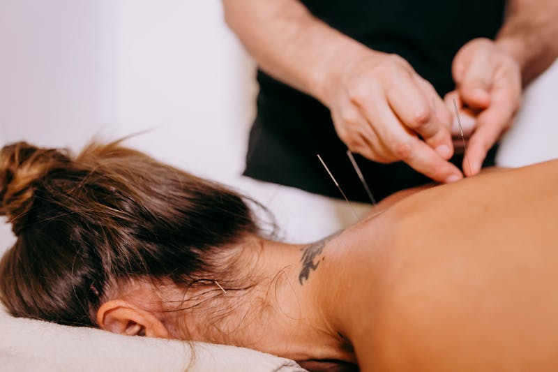

If you have ever looked into needle-based therapies for pain relief, you have likely come across two terms: acupuncture and dry needling. Both treatments involve inserting thin needles into the body, and from the outside they can look remarkably similar. However, they are grounded in different philosophies, target different structures, and are used to treat different conditions.
Understanding these differences is important because the right choice depends on your specific symptoms, goals, and health history. In this guide, we will walk through what each treatment involves, how they compare, and how to determine which approach — or combination of both — may be the best fit for you.
What is Acupuncture?
Acupuncture is a centuries-old practice rooted in Traditional Chinese Medicine (TCM). It is practiced by tens of thousands of licensed acupuncturists and certified healthcare providers worldwide. The philosophy behind acupuncture is based on the concept of Qi (pronounced "chee"), the vital energy that flows through the body along specific pathways called meridian lines.
According to TCM, illness and pain arise when the flow of Qi becomes blocked or unbalanced. Acupuncture aims to restore this flow. A practitioner inserts solid monofilament needles — extremely fine, thread-like needles — at precise points along the body's meridian lines. By stimulating these points, the treatment encourages energy to flow freely and the body to return to a state of balance.
Acupuncture is used to address a wide range of conditions, from chronic pain and headaches to digestive issues, stress, and sleep disorders. It takes a whole-body approach, often treating not just the area where you feel symptoms but also related points throughout the body that influence overall health.
What is Dry Needling?
Dry needling is a modern, Western-medicine technique that healthcare providers use for pain and movement issues associated with myofascial trigger points — those tight, tender knots that develop in muscles when they are overworked, injured, or under stress.
With this technique, a provider inserts thin, solid monofilament needles (think paper-thin) into or near your trigger points. Unlike acupuncture, the needles are placed based on anatomical knowledge of muscles and connective tissue rather than along meridian lines. When the needle reaches a trigger point, it causes the muscle to contract or twitch — a response known as a local twitch response. This involuntary twitch helps release the tension in the muscle, relieve pain, and improve range of motion.
Dry needling is almost always used as part of a larger pain management plan that could include exercise prescription, stretching, manual therapy, massage, and other physiotherapy techniques. It is a targeted treatment designed to address specific musculoskeletal problems rather than overall energy balance.
Key Differences Between Acupuncture and Dry Needling
While the tools look similar, the two treatments differ in several important ways.
Philosophy and origins: Acupuncture is based on Traditional Chinese Medicine and the concept of restoring Qi flow along meridian lines. Dry needling is based on Western anatomical and neurophysiological principles, targeting myofascial trigger points in muscles.
Needle placement: In acupuncture, needles are placed at specific acupuncture points along meridian pathways, which may be far from the area of pain. In dry needling, needles are inserted directly into or near the trigger point in the affected muscle.
Conditions treated: Acupuncture addresses a broad range of conditions including chronic pain, stress, anxiety, nausea, allergies, digestive issues, and sleep problems. Dry needling is primarily used for musculoskeletal issues such as muscle tightness, trigger points, reduced range of motion, and sports-related injuries.
Treatment approach: Acupuncture takes a holistic, whole-body approach and may involve needles in multiple areas of the body. Dry needling is more localized, focusing specifically on the muscles and tissue causing your symptoms.
Who performs it: Acupuncture can be performed by licensed acupuncturists or by healthcare professionals (such as physiotherapists) who have completed certified acupuncture training. Dry needling is typically performed by physiotherapists, chiropractors, or other regulated health professionals who have completed specialized dry needling courses.
Benefits of Acupuncture
Acupuncture has been studied extensively and is recognized by organizations such as the World Health Organization for its effectiveness in treating numerous conditions. Key benefits include:
- Chronic pain relief — effective for conditions like low back pain, neck pain, osteoarthritis, and headaches
- Stress and anxiety reduction — promotes relaxation and can help regulate the nervous system
- Nausea management — commonly used to reduce nausea associated with chemotherapy, pregnancy, and post-surgical recovery
- Allergy relief — some patients find relief from seasonal allergy symptoms through regular acupuncture sessions
- Improved sleep — can help with insomnia and overall sleep quality by addressing underlying imbalances
- Enhanced overall well-being — many patients report improved energy, mood, and a general sense of wellness after treatment
Between sessions, some patients find that using an acupressure mat at home provides a gentle way to stimulate similar pressure points and maintain a sense of relaxation. While it does not replace professional acupuncture, it can be a helpful complement for managing everyday tension and stress.
Benefits of Dry Needling
Dry needling is particularly effective for people dealing with muscle-related pain and movement restrictions. Its benefits include:
- Trigger point release — directly deactivates the tight muscle knots responsible for referred pain and stiffness
- Pain reduction — provides rapid relief for acute and chronic muscle pain
- Improved range of motion — loosens tight muscles so joints can move more freely
- Faster sports recovery — helps athletes recover from overuse injuries and get back to training sooner
- Reduced muscle tension — addresses the root cause of tension rather than just managing symptoms
- Complements other therapies — works well alongside exercise, stretching, and manual therapy for a comprehensive treatment plan
After a dry needling session, applying a heating pad to the treated area for 15–20 minutes can help ease any post-treatment soreness and keep the muscles relaxed. Your physiotherapist may recommend heat as part of your at-home care routine.
Which Treatment is Right for You?
Choosing between acupuncture and dry needling depends on your specific condition, symptoms, and treatment goals. Here is a practical framework to help guide your decision.
Consider dry needling if:
- You are dealing with localized muscle pain, tightness, or knots
- You have specific trigger points that cause referred pain to other areas
- You are recovering from a sports injury or overuse condition
- You want a targeted treatment that fits into a broader physiotherapy plan
- You have limited range of motion due to muscle tension
Consider acupuncture if:
- You are looking for relief from a chronic condition like ongoing pain, anxiety, or insomnia
- You experience nausea, allergies, or stress-related symptoms
- You prefer a holistic approach that addresses the whole body
- You want to complement other treatments with a therapy that targets overall well-being
- Your symptoms are not clearly tied to one specific muscle or trigger point
If you are unsure, the best first step is to speak with a qualified healthcare provider. A certified physiotherapist can assess your condition and recommend the treatment — or combination of treatments — that is most likely to help.
What to Expect During Treatment
Knowing what happens during a session can help put your mind at ease, especially if you are nervous about needles.
During an Acupuncture Session
Your practitioner will begin by asking about your symptoms, health history, and treatment goals. They will then insert very fine needles at specific acupuncture points. Most people feel minimal discomfort — a slight pinch or tingling sensation as each needle is placed. Once the needles are in, you will typically rest quietly for 15–30 minutes. Many patients find the experience deeply relaxing and even fall asleep during treatment.
During a Dry Needling Session
Your physiotherapist will first assess the area of pain and identify the trigger points through palpation. They will then insert a needle directly into the trigger point. You may feel a brief cramping sensation or a muscle twitch — this is actually a good sign and means the treatment is working. Sessions are generally shorter than acupuncture, often lasting 10–20 minutes for the needling portion, though the full appointment will include other physiotherapy techniques as well.
Does it Hurt?
Both treatments use extremely thin needles, much finer than the needles used for injections or blood draws. Most patients describe the sensation as a mild ache, tingling, or brief muscle twitch rather than sharp pain. Some mild soreness in the treated area for 24–48 hours after treatment is normal, similar to the feeling after a deep tissue massage.
How Many Sessions Will I Need?
This varies depending on your condition. Some people notice improvement after a single session, while others may need a series of 4–8 treatments. Your physiotherapist will develop a treatment plan based on your progress and adjust as needed.
Between sessions, many patients find that using a massage ball on areas of tension can help maintain the benefits of dry needling and provide relief from trigger point discomfort at home. Roll gently over the tight area for 1–2 minutes, and avoid pressing too hard — the goal is to relax the muscle, not irritate it further.
Can Acupuncture and Dry Needling Be Combined?
Yes, absolutely. In fact, combining the two treatments can be a highly effective approach when managed by a qualified practitioner. A physiotherapist certified in both acupuncture and dry needling can tailor your treatment plan to address both specific muscle issues (through dry needling) and broader systemic concerns like stress, sleep, or overall pain management (through acupuncture).
For example, a patient recovering from a sports injury might benefit from dry needling to release the tight muscles contributing to their pain, while acupuncture could help manage the stress and sleep disruption that often accompany a prolonged recovery. The two therapies complement each other well because they work through different mechanisms and address different aspects of your health.
At Jumana PT, both acupuncture and dry needling are offered as part of a comprehensive physiotherapy treatment plan. Your sessions are always individualized based on your assessment, goals, and how your body responds to treatment.
Not Sure Which Treatment is Right for You?
Jumana Khambatwala is a Registered Physiotherapist certified in both acupuncture and dry needling, practicing in Ottawa and Limoges, ON. Book a consultation to discuss your symptoms and find the best treatment approach for your needs.
Book a Consultation